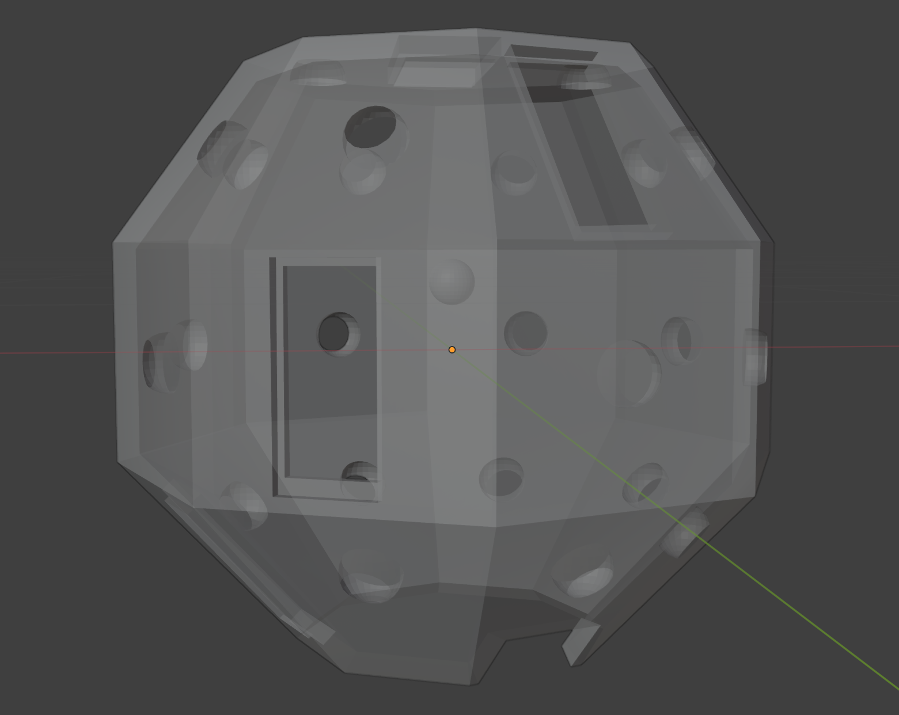
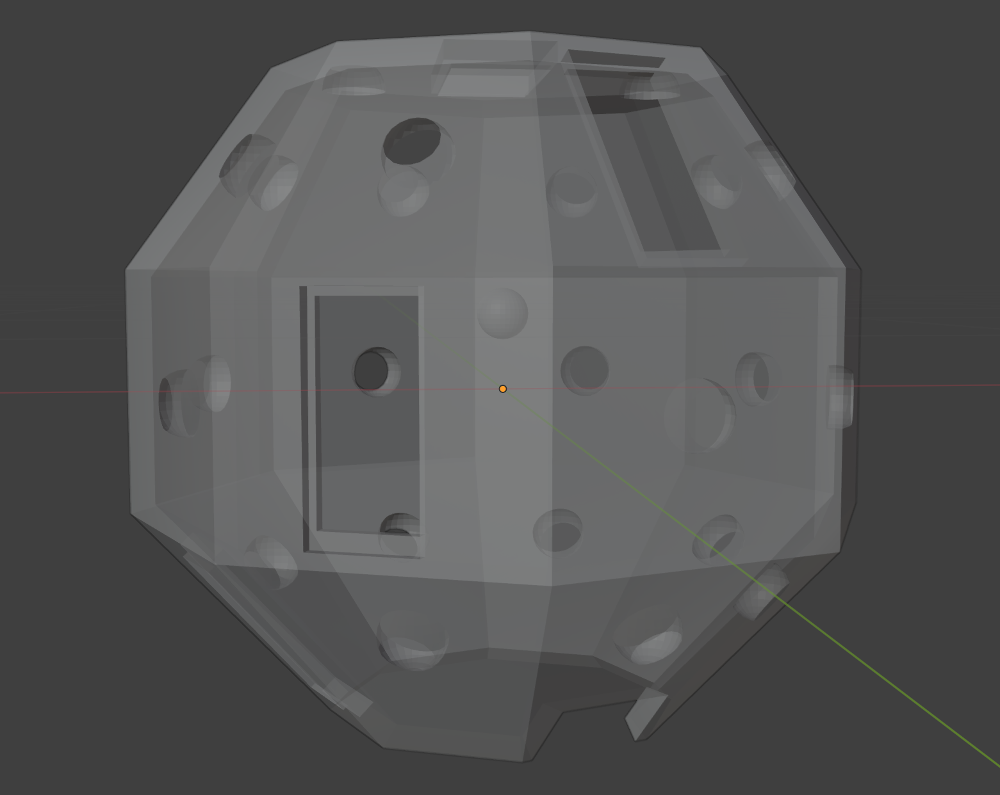

Weeknote 30/06/25
We have been working at the Cambridge University Museum of Zoology.
Specimen handling
On Monday we had our specimen handling induction with Russell Stebbings. To gain confidence taking specimens out of drawers and removing labels safely using forceps we spent some time cataloguing some British moths. Arissa was working with Lesser Cream Wave moths, Scopula immutata and Bea was working with Dotted Border Wave moths, Idaea sylvestraria. Since then, as part of our experiments we have handled a range of pinned insects including moths and butterflies of various shapes, sizes and colours, bees, and beetles!
Experimenting with off-the-shelf software
On Tuesday we started experimenting with the iPhones Anil had purchased for the project. Arissa had done some research on existing photogrammetry and LiDAR iOS apps for object capture, and we attempted to make some 3D models of insects using Kiri Engine and Polycam. Since Polycam was having some sort of login issue that day, we focused on Kiri Engine on Tuesday. We made 10 attempts throughout the day using different techniques, like LiDAR or photogrammetry from video or photo, making changes to the equipment used, like the stand for the insect. The different attempts had varying levels of success, with the worst attempts (Attempt 10, photo scan photogrammetry) having large parts of the specimen missing and the best attempts getting the general shape of the specimen’s wings, but not capturing patterns on the underside of wings or finer details like antennae or legs. We believe these issues are due to the small number of images Kiri Engine allows you to capture without paying and the lack of contrast between the finer details and their surroundings.
We made some efforts on Tuesday to fix the Polycam issues, including calling in Anil, but all attempts were unsuccessful.
Through Wednesday, Thursday and Friday, we were able to experiment with Polycam, since the issues had resolved themselves. We experimented with using a moving piece of white plastazote as a background for the captures, which allowed us to better capture the antennae. However, this did result in a sort of grey cloud forming in the Gaussian splat, which can normally be mostly cropped out. We hope that a stationary rig will eliminate this problem.
We experimented with insects with many different features. We wanted to test the accuracy of the scans with iridescence, transparency, dark and light colours, legs and antennae (and those that may be partially or completely missing), fluff, shiny surfaces and insects pinned ventrally and dorsally. We found that generally, Gaussian splat processing of about 1000 images (of the available 2000) produced the optimal result in a suitable amount of time. Photogrammetry picked up more detailed textures but was more prone to thin artefacts and missing antennae or legs in the capture.
Below are some of our most interesting results. Left to right: Gaussian splat, photogrammetry, photo. Top to bottom: Dytiscus dimidiatus, and Pine Hawk-moth (Sphinx pinastri), specimen number I.2025.2368.
We also learned how to take measurements with calipers and using 2D digitisation and ImageJ (Tiff’s current standard) to compare these to measurements taken with the Polycam measure tool. The majority of these measurements proved to be very similar to those taken with ImageJ, without any calibration.
Designing a rig
We first thought about creating a stand for the specimens to be placed on when scanning, starting with a plastazote parallelepiped, which we quickly discarded due to it obstructing too much of some of the smaller specimen’s underside. For this week’s scans we settled on using a plastic semi-transparent pipette, which was thin enough to allow us to capture the specimens.
After using white plastazote sheets to maintain a white background that would avoid confusion from a colourful background better, we started thinking about making a rig for taking more consistent scans (and without the need for two people to hold the camera and background). We first decided an initial version of this could include a white dome within which the specimens would be placed, with space for four different angles for the iPhones to be placed in when scanning, that would capture the entire specimen. Whilst the scAnt scanner should come with both a white and black dome for backgrounds, we attempted to scan nearly white specimens with the current white background setup we have, and found the off the shelf apps we’ve been using don’t have issues with separating the white of the specimens from that of the background, so we decided that a white dome would be enough as a starting point.
We also added holes for lights on each facet of the dome, as in our scans so far the lighting isn’t bright enough to capture some of the darker specimen’s patterns, and thought about using fabric or lights made of a matte material to better diffuse the light uniformly around the dome. We’ve decided to try to print this initial version next week and check for improvements in the scans taken using Polycam, before trying to make any improvements on the currently available software (if possible to make it more suitable for our specific purpose of scanning moths and other insects), then refine the rig later on for the final version.
We identified two possible options for scanning all around the specimens: either using a turntable to rotate the specimen (although the off the shelf apps generally struggled to register new positions unless the phone was the moving component), or looking into designing a ring shaped turntable using Fusion 360 to rotate the dome around the specimen instead.
 

API and export format processing research
We did some research on the ARKit and ObjectCapture APIs for iOS and macOS, including reading the documentation but to take this any further practically we need to use Xcode.
Polycam can export Gaussian splat models in 15 different formats and photogrammetry models in 14. These can be in the form of images, video, blueprint, meshes and point clouds. The Insect Ecology group will soon receive a scAnt, a high fidelity 3D scanner designed for ants to use on the museum's collection. They have already got a capture of a Silver-Y moth from the scAnt. To allow comparison to the scAnt, we decided that (at least at first) we will focus on the .obj and .fbx export formats. When exporting in these formats, you receive a zip file containing the relevant collection of files. These can be reconstructed. We found some .obj and .fbx file loaders on GitHub which may prove useful.
Insect corner
Insect fact of the week: The Blotched Emerald is a moth with sexual dimorphism. You can tell sex by the fluffiness of the antennae! Males have fluffier antennae and females’ antennae are more stick-like. They’re also super pretty.
We also held a live Pine Hawk-moth on Wednesday morning which was caught (and then released) in the weekly DAB moth trapping! They also exhibit the same sexual dimorphism as Blotched Emeralds so you can see the one we are holding here is a male with its fluffy antennae.
Zoology and CCI people
We had already met Tiff, our primary supervisor, in the spring before exams when she gave us a tour of the collections but we met her again properly on Monday. Through the week she has helped us navigate the stores, specimen handling and gave lots of tips and information on the Zoology side of the project.
On Wednesday we went to CCI coffee and enjoyed some Victoria sponge and a chat with Matt Lewis who works with the Alderney Wildlife Trust using photogrammetry and a drone to conduct gannet nesting research. That afternoon we met up with other EEG interns and supervisors at the Mill.
On Thursday we went to CRI coffee and chatted to quite a few different people, including Professor Chris Sandbrook, the director of the CRI who was very welcoming and interesting to talk to! That afternoon we went to the Insect Ecology lab meeting and met Professor Edgar Turner, Rosalind Mackey and Godspower Major.
On Friday we attended the Zoology department’s poster presentation where, among others, Rosalind and Godspower were presenting posters. Their posters were on the effects of butterfly banks on ground-dwelling arthropods and the effects of grazing and bio-enrichment on biodiversity in palm plantations respectively.